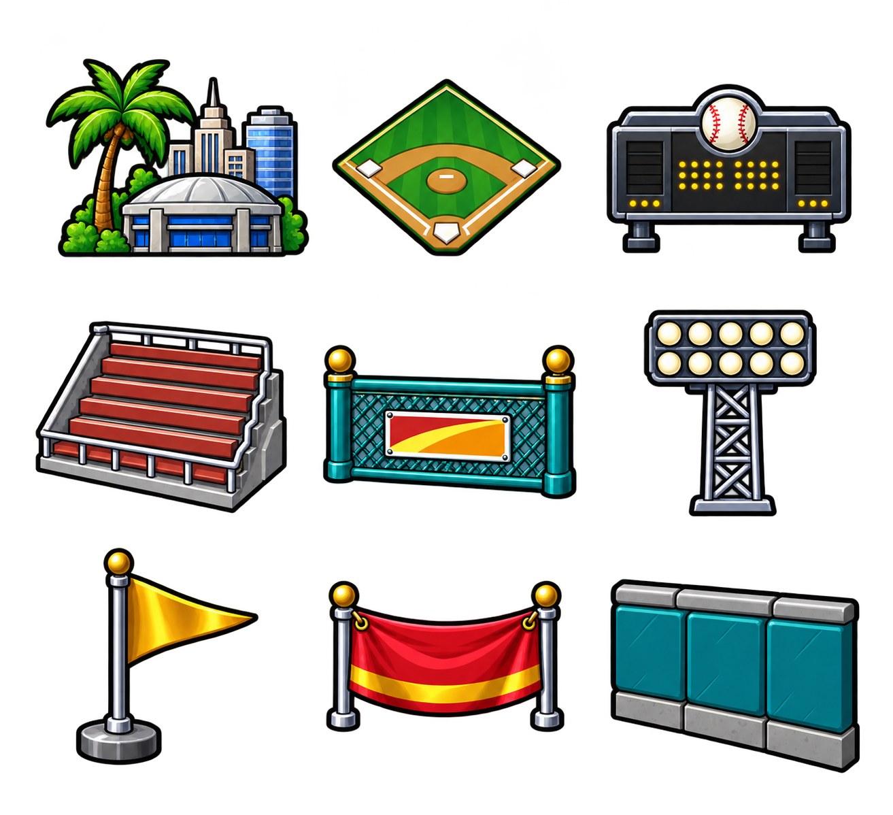

Actualización: estas mejoras ya están incluidas en la 1.0.23 publicada. El aviso de publicación pendiente que aparece debajo describe el estado de esta entrega cuando se preparó.
BASEBALL HEROES · CANDIDATO 1.0.21 · 22 OCT 2026BUILD deja atrás más figuras genéricas
Preparada y probada localmente; todavía no publicada. La web sigue en 1.0.18. Railway continúa sin habilitar los despliegues de Free y Trial según su actualización de 19:06 UTC. La biblioteca nueva está verificada en el volumen, sin activar ni modificar las partidas. Estado oficial.
Esta entrega añade catorce sprites: nueve categorías y cinco decoraciones. Incluye también las mejoras pendientes de 1.0.19 y 1.0.20. Las capturas son del ejecutable real en Chrome, con una cuenta de prueba. Para revisar el arte se añadieron recursos y artículos avanzados únicamente a esa cuenta QA; los jugadores nuevos siguen comenzando con nivel 1, liga Rookie, 6,000 Coins y sin lentes.
Notas, archivos y prompts · Cuadros de los sprites · Versión pública 1.0.18
BUILD ilustrado
Nueve categorías con sprites: fondo, campo, marcador, gradas, valla, luces, decoración, pancarta y muro. La recaudación reutiliza el cofre del HOME, recuperado anteriormente del gameplay.
 Antes · candidato 1.0.20
Antes · candidato 1.0.20 Después · candidato 1.0.21
Después · candidato 1.0.21Cinco decoraciones con volumen
Bandera, estrella, pelota, trofeo y torre de fuegos artificiales sustituyen las figuras geométricas. Las miniaturas de la tienda y los objetos colocados usan la misma ilustración. No se añadieron objetos ni nuevas reglas.
 Antes · candidato 1.0.20
Antes · candidato 1.0.20 Después · candidato 1.0.21
Después · candidato 1.0.21Miniatura real del estadio inicial
Mountain Classic muestra ahora una miniatura del fondo Rookie que se usa en el juego. Las otras miniaturas siguen mostrando sus fondos respectivos.
 Antes · candidato 1.0.20
Antes · candidato 1.0.20 Después · candidato 1.0.21
Después · candidato 1.0.21El estadio también cambia en HOME
Las decoraciones comparten su vista en BUILD, HOME y partido. Las capturas de comparación usan la misma cuenta QA y las mismas posiciones iniciales.
 Antes · candidato 1.0.20
Antes · candidato 1.0.20 Después · candidato 1.0.21
Después · candidato 1.0.21Referencia y procedencia
Los catorce sprites nuevos son reconstrucciones con image_gen integrado, usando BUILD del gameplay como referencia visual. No se presentan como recortes originales. El cofre de TICKET SALES se reutiliza de los sprites recuperados en 1.0.18. No se añadieron voces, música ni efectos de gameplay.
 Referencia original · Facebook, No doy una · 09:50
Referencia original · Facebook, No doy una · 09:50
Atlas de categorías · archivo completo conservadoAtlas de decoraciones · archivo completo conservadoHerramienta, prompts y referencias · Pruebas locales · Paquete y conservación · Estado de publicación
Las vistas comparten los cuadros en memoria. Se corrigió el renderizado inicial en Chrome usando copias de píxeles para preparar los cuadros, sin redimensionado previo en una textura auxiliar. El SWF aumenta unos 2,75 MB; la caché de los catorce cuadros ocupa aproximadamente 6,9 MiB. No se promete una mejora general de FPS.
Se conservan el modelo, el guardado v24, las cuentas públicas, la cabeza aprobada y el estadio Rookie de 1.0.20. La prueba HTTPS de esta entrega sigue pendiente del proveedor. Aún quedan otras diferencias del original: esta entrega no declara paridad completa.